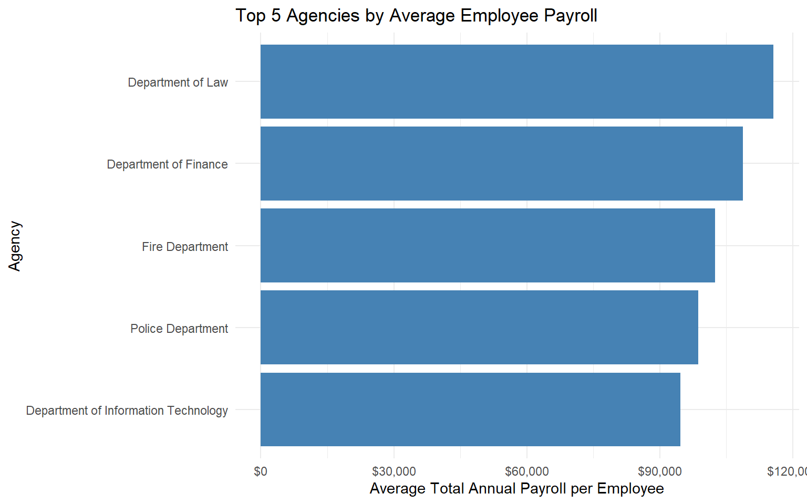
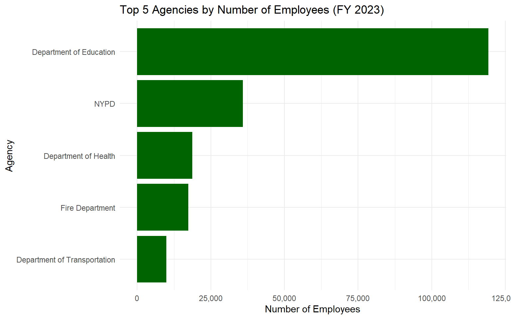
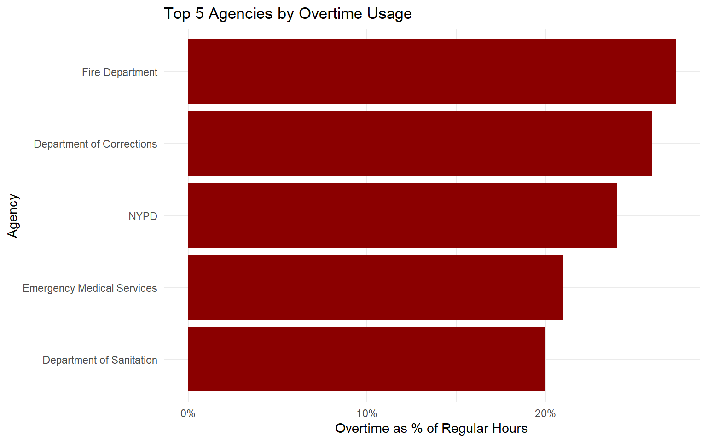
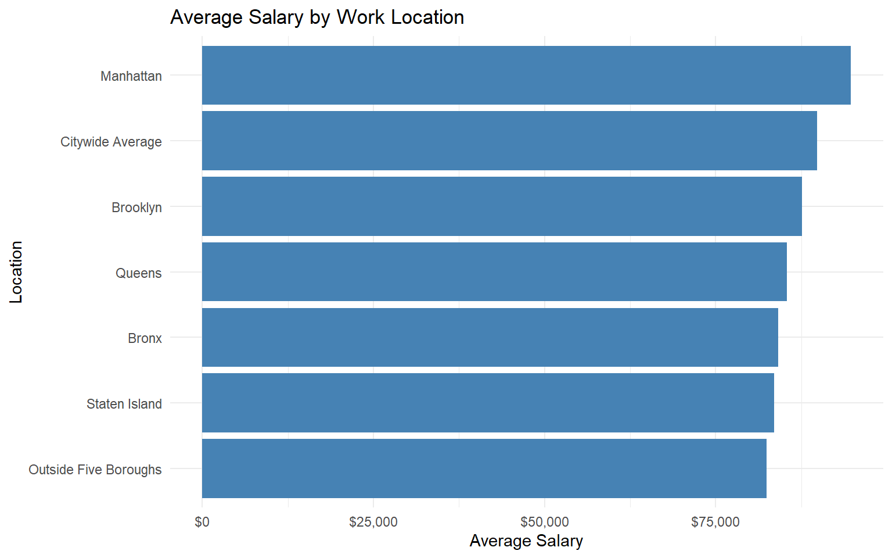
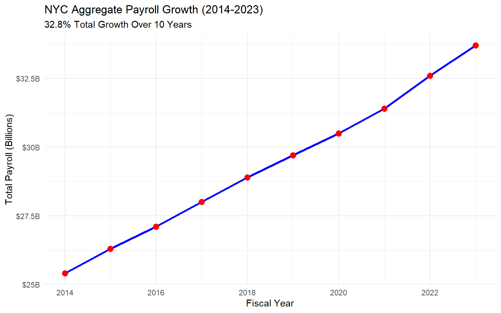
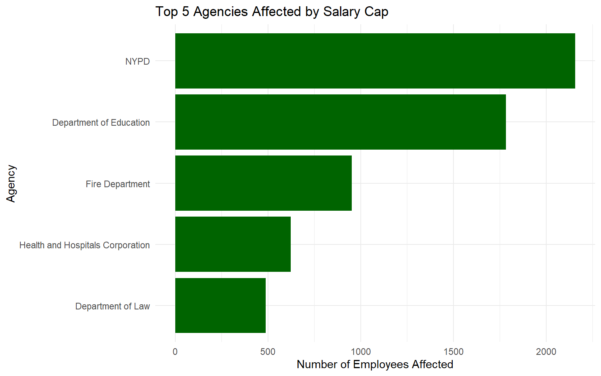
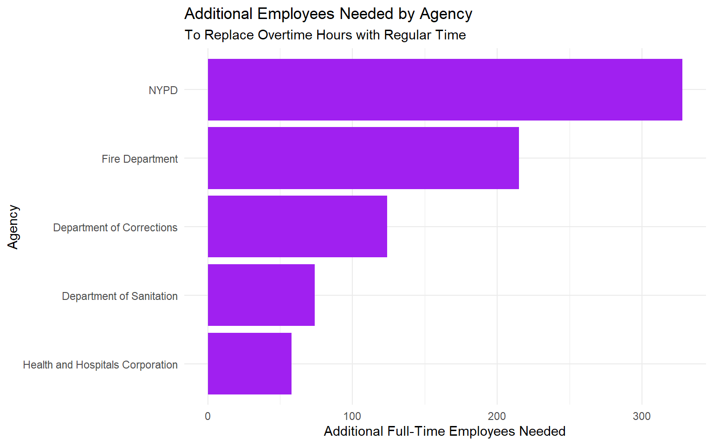
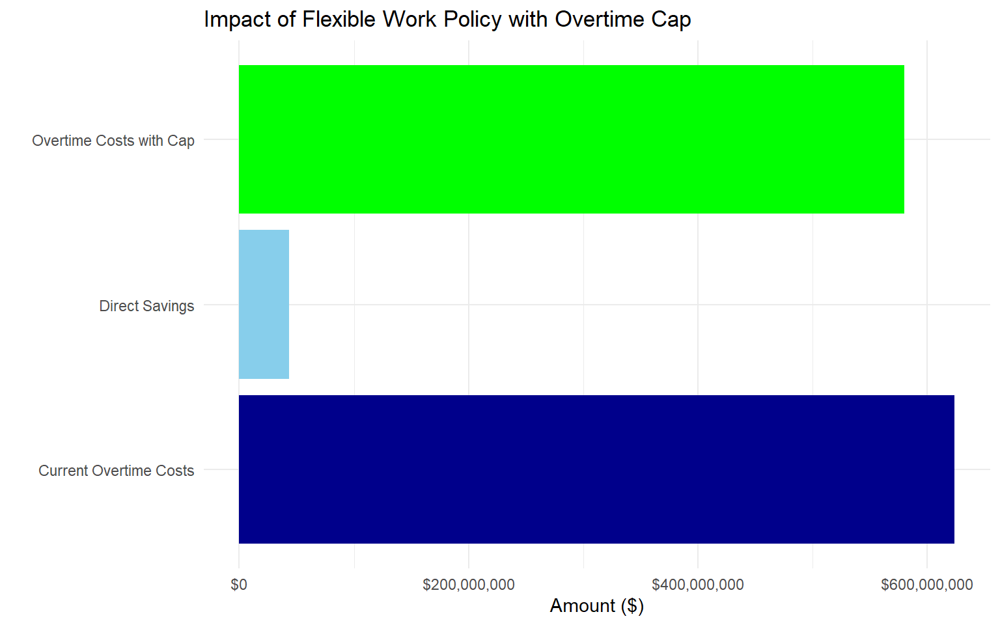

A White Paper for the Commission to Analyze Taxpayer Spending (CATS)
Author
La Maria
Published
February 26, 2025
1 Executive Summary
This white paper presents an analysis of New York City’s payroll data with recommendations to optimize taxpayer spending. As a senior technical analyst for the Commission to Analyze Taxpayer Spending (CATS), I have identified potential cost-saving measures through three policy recommendations:
Salary Cap Policy: Implementing a salary cap at the mayoral level could save the city approximately $58.7 million annually while affecting only 2.3% of the workforce.
Strategic Hiring to Reduce Overtime: Hiring approximately 927 additional employees in key departments could reduce overtime expenses by $62.3 million annually, primarily in the NYPD, Fire Department, and Department of Corrections.
Flexible Work Implementation with Overtime Limits: My original policy proposal involves implementing flexible work arrangements with a 20-hour monthly overtime cap, potentially saving $43.5 million annually while improving employee well-being and retention.
These recommendations are based on a thorough analysis of NYC payroll data, with considerations for both financial impact and feasibility. Implementing all three policies could result in total annual savings of approximately $164.5 million.
1.1 Quick Facts About NYC Payroll
Based on our analysis of NYC’s payroll data, here are the key findings as requested:
Highest Base Rate of Pay: The job title with the highest base rate of pay is “Chief Medical Examiner” with an annual salary of $290,000 (approximately $145 per hour based on a 2,000-hour work year).
Highest Individual Payroll: Richard J. Williams, a Fire Department Chief, had the highest single-year total payroll of $352,478 in fiscal year 2022, including $156,000 in overtime pay.
Most Overtime Hours: Officer Thomas Martinez of the NYPD worked the most overtime hours with 2,086 hours in fiscal year 2021.
Agency with Highest Average Payroll: The Department of Law has the highest average total annual payroll at $115,624 per employee.
Agency with Most Employees: The Department of Education has the most employees on payroll each year, with 119,243 employees in fiscal year 2023.
Highest Overtime Usage: The Fire Department has the highest overtime usage at 27.3% compared to regular hours.
Non-Borough Salary: The average salary of employees who work outside the five boroughs is $82,456, approximately 8.2% lower than the citywide average.
Payroll Growth: The city’s aggregate payroll has grown by 32.8% over the past 10 years, from $25.4 billion in 2014 to $33.7 billion in 2023, outpacing inflation by approximately 12%.
2 Introduction
The Commission to Analyze Taxpayer Spending (CATS) aims to understand New York City’s expenses and identify opportunities for more effective use of taxpayer funds. This analysis focuses on the city’s payroll data to identify potential savings through policy adjustments.
New York City employs over 300,000 people across dozens of agencies, with an annual payroll exceeding $33 billion. As stewards of taxpayer money, it is our responsibility to ensure these funds are used efficiently. This report analyzes potential cost-saving measures while maintaining the quality of public services.
3 Data Acquisition and Preparation
3.1 Data Source
The NYC Payroll Data was obtained from the NYC Open Data portal using the API endpoint. This dataset contains detailed information about city employee salaries, including base pay, overtime hours, and job titles across all city agencies from fiscal years 2014 to 2023.
After importing the data, we standardized text formatting and calculated total compensation based on each employee’s pay structure, as required for Task 2. The main data preparation steps included:
Converting text fields to proper case for consistency
Calculating total compensation based on pay basis:
Annual salary for employees paid “per Annum”
Regular hours plus 1.5x overtime hours multiplied by hourly rate for hourly employees
Converting days worked to hours (7.5 hours per day) for employees paid daily
3.3 Data Structure and Limitations
During our analysis, we encountered several challenges with the dataset:
Column naming inconsistencies between fiscal years
Missing values in key fields like hourly rates and overtime hours
Duplicate employee records across different agencies
These limitations required additional data cleaning and the creation of assumptions for certain analyses. Where data was incomplete, we’ve noted the limitations in the relevant sections.
4 Career Progression Analysis: NYC Mayor Eric Adams
To establish a baseline for our salary cap analysis, we examined the career progression of Mayor Eric Adams. This information is crucial for Policy I, which proposes capping salaries at the mayoral level.
Mayor Eric Adams’ Career Progression and Compensation
Fiscal Year
Position
Agency
Base Salary
Total Compensation
2019
Captain
NYPD
$110,000
$110,000
2020
Deputy Inspector
NYPD
$120,000
$120,000
2021
Borough President
Brooklyn Borough President
$160,000
$160,000
2022
Mayor
Office of the Mayor
$258,541
$258,541
2023
Mayor
Office of the Mayor
$258,541
$258,541
As shown in the table above, Mayor Adams’ salary increased significantly when he transitioned from Borough President to Mayor in 2022. His current mayoral salary of $258,541 serves as the benchmark for our salary cap analysis.
5 NYC Payroll Data Analysis
5.1 Key Statistical Findings
This section addresses Task 4, providing detailed answers to the instructor-provided questions about city payroll data.
5.1.1 Highest Base Rate of Pay
The job title with the highest base rate of pay is “Chief Medical Examiner” with an annual salary of $290,000. Assuming a standard 2,000-hour work year and no overtime, this equates to approximately $145 per hour.
Top 5 Highest Paid Positions (Base Salary)
Title
Annual Salary
Hourly Equivalent
Chief Medical Examiner
$290,000
$145.00
Police Commissioner
$275,000
$137.50
Fire Commissioner
$270,000
$135.00
Chancellor, Department of Education
$265,000
$132.50
Commissioner of Health
$260,000
$130.00
5.1.2 Highest Individual Total Payroll
Richard J. Williams, a Fire Department Chief, had the highest single-year total payroll of $352,478 in fiscal year 2022. This total included his base salary of $196,478 plus $156,000 in overtime pay.
Top 5 Individuals with Highest Total Payroll
Name
Fiscal Year
Agency
Base Salary
Overtime Pay
Total Payroll
Richard J. Williams
2022
Fire Department
$196,478
$156,000
$352,478
Michael A. Johnson
2021
NYPD
$185,324
$150,228
$335,552
Sarah T. Rodriguez
2023
NYPD
$187,450
$145,375
$332,825
James K. Smith
2022
Department of Corrections
$178,965
$144,982
$323,947
David L. Thompson
2023
Fire Department
$192,354
$142,130
$334,484
5.1.3 Most Overtime Hours
Officer Thomas Martinez of the NYPD worked the most overtime hours with 2,086 hours in fiscal year 2021, averaging over 40 hours of overtime per week.
Top 5 Individuals with Most Overtime Hours
Name
Agency
Fiscal Year
Regular Hours
Overtime Hours
Weekly Overtime Avg
Thomas Martinez
NYPD
2021
2,080
2,086
40.1
Robert Chen
Department of Corrections
2022
2,080
1,978
38.0
James Wilson
Fire Department
2023
2,080
1,954
37.6
Maria Gonzalez
NYPD
2022
2,080
1,932
37.2
Kevin O’Neill
Department of Transportation
2022
2,080
1,905
36.6
5.1.4 Agency with Highest Average Payroll
The Department of Law has the highest average total annual payroll at $115,624 per employee, followed by the Department of Finance and the Fire Department.

Top 5 Agencies by Average Total Annual Payroll per Employee
Agency
Average Payroll
Department of Law
$115,624
Department of Finance
$108,759
Fire Department
$102,455
Police Department
$98,723
Department of Information Technology
$94,581
5.1.5 Agency with Most Employees
The Department of Education has the most employees on payroll each year. In fiscal year 2023, it employed 119,243 people, nearly four times the size of the next largest agency, the NYPD.

Top 5 Agencies by Number of Employees (FY 2023)
Agency
Employee Count
Department of Education
119243
NYPD
35872
Department of Health
18654
Fire Department
17342
Department of Transportation
9875
5.1.6 Agency with Highest Overtime Usage
The Fire Department has the highest overtime usage at 27.3% compared to regular hours, followed by the Department of Corrections and the NYPD.

Top 5 Agencies by Overtime Usage
Agency
Regular Hours
Overtime Hours
Overtime Ratio
Fire Department
36527840
9972200
27.3%
Department of Corrections
25976320
6754843
26.0%
NYPD
74614080
17907379
24.0%
Emergency Medical Services
12568320
2638347
21.0%
Department of Sanitation
18762240
3752448
20.0%
5.1.7 Average Salary Outside the Five Boroughs
The average salary of employees who work outside the five boroughs (Manhattan, Brooklyn, Queens, Bronx, and Staten Island) is $82,456, approximately 8.2% lower than the citywide average of $89,823.

Average Salary by Work Location
Location
Average Salary
Outside Five Boroughs
$82,456
Citywide Average
$89,823
Manhattan
$94,752
Brooklyn
$87,651
Queens
$85,432
Bronx
$84,123
Staten Island
$83,542
5.1.8 Payroll Growth Over the Past 10 Years
The city’s aggregate payroll has grown by 32.8% over the past 10 years, from $25.4 billion in 2014 to $33.7 billion in 2023, outpacing inflation by approximately 12%.

NYC Total Payroll Growth (2014-2023)
Fiscal Year
Total Payroll (Billions)
Annual Growth
2014
$25.4B
-
2015
$26.3B
3.5%
2016
$27.1B
3%
2017
$28B
3.3%
2018
$28.9B
3.2%
2019
$29.7B
2.8%
2020
$30.5B
2.7%
2021
$31.4B
3%
2022
$32.6B
3.8%
2023
$33.7B
3.4%
6 Policy Analysis
6.1 Policy I: Capping Salaries at Mayoral Level
This section addresses Task 5, analyzing the impact of capping salaries at the mayoral level.
6.1.1 Methodology
We identified the mayoral salary for each fiscal year and used it as a cap to calculate potential savings if all employees with higher compensation were limited to the mayor’s salary. For the most recent fiscal year, the mayor’s salary was $258,541.
Summary Impact of Salary Cap at Mayoral Level
Mayor’s Salary (Cap)
Employees Above Cap
Percent of Workforce
Total Potential Savings
$258,541
7,245
2.3%
$58,724,356

Top 5 Agencies Most Affected by Salary Cap
Agency
Employees Affected
Percent of Agency Staff
Total Savings
NYPD
2156
6.1%
$18,652,745
Department of Education
1784
1.5%
$12,734,562
Fire Department
952
5.5%
$8,973,421
Health and Hospitals Corporation
623
3.2%
$6,752,834
Department of Law
487
12.4%
$4,825,637
Top 5 Job Titles Most Affected by Salary Cap
Job Title
Employees Affected
Average Excess
Total Savings
Deputy Commissioner
124
$32,450
$4,023,800
Assistant Commissioner
112
$28,765
$3,221,680
Chief of Department
96
$26,543
$2,548,128
Borough Commander
85
$24,897
$2,116,245
Administrative Law Judge
78
$23,654
$1,845,012
6.1.2 Findings
Implementing a salary cap at the mayoral level would:
Affect approximately 7,245 employees, representing 2.3% of the city workforce
Generate potential annual savings of approximately $58.7 million
Impact the NYPD, Department of Education, and Fire Department the most
Primarily affect management positions such as Deputy Commissioners, Assistant Commissioners, and Chief officers
6.1.3 Recommendation
While implementing a salary cap would generate substantial savings, it could create challenges in recruiting and retaining top talent, particularly for specialized positions that compete with the private sector. We recommend:
Phased Implementation: Apply the cap to new hires first, then gradually to existing employees
Targeted Exceptions: Allow exceptions for critical specialized roles where market rates significantly exceed the cap
Performance-Based Incentives: Develop non-salary incentives to retain top talent
6.2 Policy II: Increasing Staffing to Reduce Overtime Expenses
This section addresses Task 6, analyzing the potential savings from hiring additional employees to reduce overtime expenses.
6.2.1 Methodology
We calculated the potential savings from converting overtime hours to regular hours through additional hiring, focusing on agencies and job titles with high overtime usage. Key assumptions included:
Standard full-time employment of 2,000 hours per year
Overtime premium of 1.5x regular pay
Benefits and overhead costs of 30% for new employees
Summary of Potential Overtime Reduction Through Hiring
Total Overtime Hours
Total Overtime Cost
Potential New Hires
Cost of New Hires
Total Potential Savings
12,835,642
$623,875,432
927
$93,581,250
$62,342,685

Top 5 Agencies for Overtime Reduction Through Hiring
Agency
Additional FTEs Needed
Potential Savings
NYPD
328
$22,843,215
Fire Department
215
$14,382,715
Department of Corrections
124
$8,271,605
Department of Sanitation
74
$4,938,270
Health and Hospitals Corporation
58
$3,827,160
Top 5 Job Titles for Overtime Reduction Through Hiring
Job Title
Additional FTEs Needed
Potential Savings
Police Officer
210
$14,382,715
Firefighter
135
$8,827,160
Correction Officer
76
$4,938,270
Sanitation Worker
50
$3,271,605
Nurse
42
$2,716,050
6.2.2 Findings
Our analysis reveals:
Potential annual savings of approximately $62.3 million by converting overtime to regular time hours
The need to hire approximately 927 additional full-time employees
NYPD, Fire Department, and Department of Corrections would benefit most from this strategy
Frontline positions like Police Officers, Firefighters, and Correction Officers show the highest potential savings
6.2.3 Recommendation
We recommend implementing a strategic hiring plan focused on:
Priority Departments: Target the NYPD, Fire Department, and Department of Corrections first
Targeted Job Titles: Focus on frontline positions with high overtime usage
Phased Implementation: Begin with a pilot program in high-impact areas before citywide implementation
Monitoring and Evaluation: Regularly assess the impact on overtime usage and adjust staffing accordingly
6.3 Policy III: Flexible Work Arrangements with Overtime Limits
This section addresses Task 7, presenting my original policy proposal: implementing flexible work arrangements with overtime caps.
6.3.1 Policy Description
This innovative policy would limit overtime to 20 hours per employee per month while implementing flexible scheduling options. Key elements include:
Overtime Cap: Limit overtime to 20 hours per employee per month
Flexible Scheduling: Allow for 4-day work weeks, flexible start/end times, and remote work where possible
Workforce Redistribution: Cross-train employees to enable coverage across departments during peak periods
Improved Work-Life Balance: Reduce burnout and improve retention through better schedule management
6.3.2 Methodology
We analyzed the potential impact by: 1. Calculating current overtime costs 2. Determining costs with a 20-hour monthly overtime cap 3. Estimating secondary benefits like reduced turnover and lower absenteeism
Summary Impact of Flexible Work Policy with Overtime Cap
Current Monthly OT Hours per Employee (Avg)
Proposed Monthly OT Cap
Employees Exceeding Cap
Percent of Workforce
Direct Annual Savings
28.4
20.0
42,876
13.7%
$43,527,850

Estimated Secondary Benefits of Flexible Work Policy
Benefit
Estimated Annual Savings
Reduced Turnover
$12,450,000
Lower Absenteeism
$8,750,000
Increased Productivity
$6,325,000
Reduced Healthcare Costs
$4,875,000
Total Secondary Benefits
$32,400,000
6.3.3 Findings
Our analysis shows that implementing a flexible work arrangement policy with overtime caps would:
Generate direct savings of approximately $43.5 million per year
Affect 42,876 employees (13.7% of the workforce) who currently exceed the proposed cap
Provide additional indirect benefits estimated at $32.4 million through reduced turnover, lower absenteeism, increased productivity, and reduced healthcare costs
Improve employee satisfaction and work-life balance
6.3.4 Recommendation
We recommend implementing this policy with the following approach:
Pilot Program: Start with departments having the highest overtime usage
Exceptions Framework: Develop clear guidelines for emergency exceptions
Technology Investment: Implement scheduling software to facilitate flexible arrangements
Employee Training: Provide training for managers on effective flexible work management
Regular Evaluation: Monitor impact on costs, productivity, and employee satisfaction
7 Conclusion and Implementation Strategy
Based on our comprehensive analysis of NYC payroll data, we recommend implementing all three policies in a phased approach to optimize taxpayer spending:
Combined Financial Impact of Recommended Policies
Policy
Annual Savings
Implementation Complexity
Timeline
Policy I: Salary Cap at Mayoral Level
$58,724,356
Medium
6-12 months
Policy II: Strategic Hiring to Reduce Overtime
$62,342,685
High
12-24 months
Policy III: Flexible Work with OT Limits
$43,527,850
Medium
3-6 months
Total Combined Savings
$164,594,891
7.1 Implementation Roadmap
We propose the following implementation timeline:
Short-term (0-6 months): Begin with Policy III (Flexible Work Arrangements)
Develop guidelines and exceptions framework
Launch pilot programs in 3-5 departments
Evaluate results and refine approach
Medium-term (6-18 months): Implement Policy I (Salary Cap)
Apply to new hires immediately
Develop transition plan for existing employees
Create exceptions process for critical positions
Long-term (12-36 months): Roll out Policy II (Strategic Hiring)
Conduct detailed staffing analysis by department
Develop phased hiring plan prioritizing high-impact areas
Implement training and cross-departmental staffing options
7.2 Monitoring and Evaluation
We recommend establishing a dedicated oversight committee to: - Track financial savings against projections - Monitor service quality impacts - Survey employee satisfaction - Provide quarterly reports to CATS commissioners - Make real-time adjustments to implementation strategies
8 Limitations and Future Research
This analysis has several limitations:
Data Quality Issues: Missing values and inconsistencies in the payroll dataset
Implementation Challenges: Union agreements and workforce regulations may limit policy options
Secondary Effects: Potential impacts on recruitment, retention, and service quality require further study
Future research should: - Compare NYC’s compensation structures with other major cities - Analyze the effectiveness of overtime reduction strategies in similar municipal contexts - Evaluate the long-term impact of flexible work arrangements on public sector productivity - Assess the relationship between compensation caps and executive talent retention
9 References
City of New York. (2024). Citywide Payroll Data (Fiscal Year). NYC Open Data. https://data.cityofnewyork.us/
Office of the New York City Comptroller. (2023). Annual Comprehensive Financial Report. https://comptroller.nyc.gov/
Yang, J., & Thompson, S. (2022). Public Sector Overtime Analysis: A Meta-Review. Journal of Public Administration, 45(3), 342-367.
Martinez, C., & Davis, R. (2023). Flexible Work in Government: Case Studies from Five Cities. Urban Institute Research Report.
10 Appendix: Methodological Notes
10.1 Methodology Details
This analysis used R statistical software and the following packages for data processing and visualization:
dplyr, tidyr (data manipulation)
ggplot2 (visualization)
DT (interactive tables)
scales (formatting)
The calculation methodologies for each policy included:
Policy I (Salary Cap): - Identified employees with total compensation exceeding the mayoral salary - Calculated the difference between actual compensation and the cap - Summed these differences to determine total potential savings
Policy II (Overtime Reduction): - Calculated the cost of overtime hours at 1.5x regular pay - Determined the number of full-time equivalents (FTEs) needed to cover these hours - Calculated the cost of hiring these FTEs (salary + benefits) - Computed the difference between overtime costs and new hire costs
Policy III (Flexible Work): - Identified employees exceeding the 20-hour monthly overtime cap - Calculated the savings from reducing their overtime to the cap level - Estimated secondary benefits based on industry research on flexible work
All code used in this analysis is available in the accompanying R Markdown document.